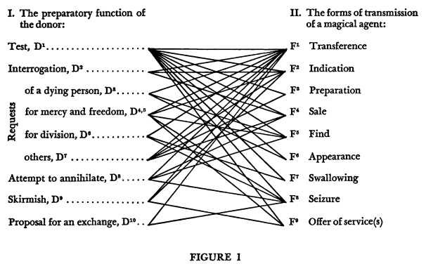

Morphologie du Conte, de Vladimir Propp
Vladimir Propp est un sociologue qui, travaillant sur le recueil de contes russes d'Affanasiev, se rend compte que ces derniers ont une structure abstraite très précise, et que cette structure forme un genre d'équation générale. Il publie ses travaux dans un livre Morphologie du conte populaire.
Ce livre fait partie des sources utiles pour travailler sur la structure des scenarii de jeux de rôles, comme les game master emulators (voir la section Mythic-fr du repo orey/jdr) ou la Grande Liste des intrigues de JDR.
Ce qui suit est une traduction française originale du squelette du livre anglais.
Table#
- Les fonctions de la Dramatis Personae
- Synthèse
- Phase préparatoire
- Complication
- Aventure
- La structure du conte
- TABLE I : La situation initiale
- TABLE II : Section préparatoire
- TABLE III : La complication
- TABLE IV : Donneurs
- TABLE V : Depuis l'entrée chez la personne aidante jusqu'à la fin du premier mouvement
- TABLE VI : Début du second mouvement
- TABLE VII : Suite du second mouvement
Les fonctions de la Dramatis Personae#
Synthèse#
Phases :
- Préparatoire : P
- Complication : C
- Aventure : A
| Phase | Etape | Description | Alias | Symbole | Lien |
|---|---|---|---|---|---|
| P | I. | Un des membres de la famille s'absente de la maison | absence | β | Lien |
| P | II. | On interdit quelque chose au héros | interdiction | γ | Lien |
| P | III. | L'interdiction est violée | violation | δ | Lien |
| P | IV. | Le méchant cherche des indices (sous forme de question) (il vient en reconnaissance, dans le but d'obtenir des informations) | reconnaissance | ε | Lien |
| P | V. | Le méchant reçoit des informations sur sa victime | réception | ζ | Lien |
| P | VI. | Le méchant tente de tromper la victime pour prendre possession de lui ou de ses affaires | tromperie | η | Lien |
| P | VII. | La victime se fait tromper et se aide involontairement son ennemi | complicité | θ | Lien |
| C | VIII. | Le méchant fait du mal ou blesse un membre de la famille | infamie | A | Lien |
| C | VIIIa. | Un membre de la famille soit manque de quelque chose, soit désire quelque chose | manque | a | Lien |
| C | IX. | La mauvaise fortune ou le manque devient connu : le héros est approché avec une requête ou une commande ; il est autorisé à partir ou il est envoyé | médiation (incident de transition) | B | Lien |
| C | X. | Le quêteur accepte ou décide d'une réaction | début de réaction | C | Lien |
| C | XI. | Le héros quitte la maison | départ | ↑ | Lien |
| A | XII. | Le héros est testé, interrogé, attaqué, etc., ce qui prépare la phase où il va recevoir un agent magique ou de l'aide | fonction première du donneur | D | Lien |
| A | XIII. | Le héros réagit aux actions du futur donneur | réaction du héros | E | Lien |
| A | XIV. | Le héros acquiert l'usage d'un agent magique | réception d'un agent magique | F | Lien |
| A | XV. | Le héros est transféré, livré ou conduit dans les environs d'un objet lié à la recherche | transport | G | Lien |
| A | XVI. | Le héros et le méchant se rejoignent pour un combat | combat | H | Lien |
| A | XVII. | Le héros est marqué | marque | J | Lien |
| A | XVIII. | Le méchant est vaincu | victoire | I | Lien |
| A | XIX. | La mauvaise fortune initiale ou le manque sont résolus | resolution | K | Lien |
| A | XX. | Le héros revient | retour | ↓ | Lien |
| A | XXI. | Le héros est poursuivi | poursuite | Pr | Lien |
| A | XXII. | Le héros est secouru dans la poursuite | secours | Rs | Lien |
| A | XXIII. | Le héros, sous une forme non reconnaissable, arrive chez lui ou dans un autre pays | arrivé non reconnu | o | Lien |
| A | XXIV. | Un faux héros présente des demandes infondées | demandes infondées | L | Lien |
| A | XXV. | Une tâche difficile est proposée au héros | épreuve | M | Lien |
| A | XXVI. | La tâche est accomplie | solution | N | Lien |
| A | XXVII. | Le héros est reconnu | reconnaissance | Q | Lien |
| A | XXVIII. | Le faux héros ou le méchant est découvert | découverte | Ex | Lien |
| A | XXIX. | On donne au héros une nouvelle apparence | transfiguration | T | Lien |
| A | XXX. | Le méchant est puni | punition | U | Lien |
| A | XXXI. | Le héros se marrie et monte sur le trône | mariage | W | Lien |
Phase préparatoire#
I. Un des membres de la famille s'absente de la maison : absence, β
- La personne qui s'absente est d'une génération plus ancienne : β¹
- Mort des parents : β²
- Le personne qui s'absente est de la jeune génération : β³
II. On interdit quelque chose au héros : interdiction, γ
- Interdiction : γ¹
- Inverse : obligation de faire quelque chose : γ²
III. L'interdiction est violée : violation, δ
C'est le point où intervient le méchant.
IV. Le méchant cherche des indices (sous forme de question) (il vient en reconnaissance, dans le but d'obtenir des informations) : reconnaissance, ε
- Localisation des enfants, objets précieux, etc. : ε¹
- Inverse : la victime supposée pose une question au méchant : ε²
- La reconnaissance peut passer par des rencontres avec d'autres personnes : ε³
V. Le méchant reçoit des informations sur sa victime : réception, ζ
- Le méchant reçoit directement la réponse à sa question : ζ¹
- Quelqu'un donne la réponse directement : ζ², ζ³
VI. Le méchant tente de tromper la victime pour prendre possession de lui ou de ses affaires : tromperie, η
Le méchant peut se déguiser.
- Il use de persuasion : η¹
- Il use de moyens magiques : η²
- Il use d'autres moyens de tromperie ou de coercition : η³
VII. La victime se fait tromper et se aide involontairement son ennemi : complicité, θ
- Le héros se fait persuader par le méchant : θ¹
- Le héros réagit mécaniquement à l'emploi de la magie ou d'autres moyens de tromperie et de coercition : θ², θ³
Le méchant peut tirer avantage de la situation défavorable du héros (pauvreté, etc.).
Ces 7 premières phases prépare la lancement de l'histoire à l'étape 8.
Complication#
VIII. Le méchant fait du mal ou blesse un membre de la famille : infamie, A
- Le méchant kidnappe une personne : A1
- Le méchant s'empare d'un agent magique : A2;. 2a. Le méchant peut aussi ordonner la mort de quelque chose de magique : AII;
- Le méchant pille ou gâche les récoltes : A3;
- Le méchant vole la lumière du jour: A4;
- Le méchant pille sous d'autres formes : A5
- Le méchant cause des blessures physiques, ou des mutilations : A6
- Le méchant est la cause d'une soudaine disparition : A7
- Le méchant demande ou séduit sa victime : A8
- Le méchant rejette quelqu'un : A9
- Le méchant ordonne que quelqu'un soit jeté dans la mer : A10
- Le méchant jette un sort à quelqu'un ou à quelque chose : A11
- Le méchant remplace quelque chose par autre chose (par exemple un nouveau-né) : A12
- Le méchant ordonne un meurtre : A13
- Le méchant commet un meurtre : A14
- Le méchant emprisonne ou détient quelqu'un : A15
- Le méchant demande un mariage forcé : A16. 16a. Même chose pour les parents (par exemple, un frère avec sa sœur) : AXVI
- Le méchant menace de cannibalisme : A17. 17a. La même chose entre parents (par exemple, une sœur avec son frère) : AXVII
- Le méchant tourmente la victime la nuit : A18
- Le méchant déclare la guerre : A19
Le conte démarre le plus souvent par un "manque".
VIIIa. Un membre de la famille soit manque de quelque chose, soit désire quelque chose : manque, a
- Manque d'un/une fiancé(e) : a1
- Manque d'un agent magique : a2
- Manque d'un objet extraordinaire (mais non magique) : a3
- Manque d'un objet magique : a4
- Manque d'argent, de moyens de subsistance, etc. : a5
- Autres manques : a6
IX. La mauvaise fortune ou le manque devient connu : le héros est approché avec une requête ou une commande ; il est autorisé à partir ou il est envoyé : médiation (incident de transition), B
Cette fonction emmène le héros dans le conte.
Cas n°1. Le héros cherche quelque chose : quêteur.
- Quelqu'un demande de l'aide, le héros est envoyé (par exemple par un roi) : B1
- Le héros est directement envoyé : B2
- On autorise au héros de partir de chez lui : B3
- Le héros part sans qu'on lui demande après que la mauvaise fortune ait été annoncée (par exemple, l'enlèvement de sa soeur) : B4
Cas n°2. Les héros est une victime (par exemple, la personne enlevée).
- Le héros banni est transporté hors de sa maison : B5
- Le héros condamné à mort est secrètement libéré : B6
- Une lamentation est chantée : B7
X. Le quêteur accepte ou décide d'une réaction : début de réaction, C
XI. Le héros quitte la maison : départ, ↑
L'aventure#
XII. Le héros est testé, interrogé, attaqué, etc., ce qui prépare la phase où il va recevoir un agent magique ou de l'aide : fonction première du donneur, D
- Le donneur teste le héros : D1
- Le donneur salue et interroge le héros : D2
- Une personne mourante ou morte demande qu'on lui rende un service : D3
- Un prisonnier supplie qu'on le libère : D4. Si la séquence prend en compte l'emprisonnement du donneur : *D4
- Quelqu'un demande pitié au héros : D5
- Des gens se disputent et demandent la division d'une propriété : D6
- Autres requêtes : D7
- Une créature hostile tente de détruire le héros : D8
- Une créature hostile se bat avec le héros : D9
- On montre au héros un agent magique qui est offert en échange de quelque chose : D10
XIII. Le héros réagit aux actions du futur donneur : réaction du héros, E
- Le héros résiste (ou non) à un test : E1
- Le héros répond (ou pas) à un salut : E2
- Le héros rend (ou pas) un service à une personne morte : E3
- Il libère une personne captive : E4
- Il est miséricordieux envers une personne suppliante : E5
- Il répartit la propriété et réconcilie ceux qui se disputent : E6
- Le héros accomplit un autre service : E7
- Le héros se sauve d'un attentat à sa vie en employant les mêmes tactiques que son adversaire : E8
- Le héros vainc (ou pas)= son adversaire : E9
- Le héros accepte un échange , mais utilise immédiatement le pouvoir magique de l'objet échangé contre celui qui a proposé le troc : E10
XIV. Le héros acquiert l'usage d'un agent magique : réception d'un agent magique, F
- L'agent magique est directement donné (récompense, cadeau, etc.) : F1
- Quelqu'un indique au héros où est l'agent magique : F2
- L'agent magique est préparé : F3
- L'agent est vendu et acheté : F4
- L'agent tombe dans les mains du héros par chance : F5
- L'agent apparaît soudainement de sa propre volonté : F6
- L'agent est mangé ou bu : F7
- L'agent est saisi ou volé : F8
- Plusieurs personnages se mettent à disposition du héros : F9
Les fonctions D et F peuvent obéir à un ordre compliqué.

XV. Le héros est transféré, livré ou conduit dans les environs d'un objet lié à la recherche : transport, G
Souvent, dans un autre "royaume".
- Le héros vole dans les airs : G1
- Le héros voyage sur terre ou sur l'eau : G2
- Il est conduit : G3
- On lui montre la route : G4
- Il utilise des moyens de communication fixes (par exemple, un escalier, un tunnel, etc.) : G5
- Il suit des traces de sang : G6
XVI. Le héros et le méchant se rejoignent pour un combat : combat, H
- Ils se battent en plein air : H1
- Ils font un concours : H2
- Ils jouent aux cartes : H3
- Ils se mesurent sur un ou plusieurs critères : H4
XVII. Le héros est marqué : marque, J
- Une marque est appliquée sur le corps du héros : J1
- Le héros reçoit un anneau ou une serviette : J2
XVIII. Le méchant est vaincu : victoire, I
- Le méchant est vaincu dans un combat : I1. Si les héros sont plusieurs et que certains se cachent et d'autres sont victorieux, : *I1
- Il est battu dans un concours : I2
- Il perd aux cartes : I3
- Il perd sur d'autres critères : I4
- Il est tué sans combat préliminaire : I5
- Il est directement banni : I7
XIX. La mauvaise fortune initiale ou le manque sont résolus : K
A et K forment une paire.
- L'objet de la quête est saisi par la force ou l'intelligence : K1.
- L'objet de la quête est obtenu par plusieurs personnages en même temps : K2. Il peut donc y avoir répétition de tentatives et d'échecs jusqu'à arriver à la tentative qui est un succès.
- L'objet de la quête est obtenu en utilisant des objets pour séduire ou attirer le porteur : K3
- L'objet de la quête est obtenu comme résultat direct des actions précédentes : K4
- L'objet de la quête est obtenu instantanément via l'usage d'un agent magique : K5
- L'usage d'un agent magique résout la pauvreté : K6
- L'objet de la quête est pris (par exemple lors d'un pillage) : K7
- Le charme sur une personne est rompu : K8
- Une personne tuée est ressuscitée : K9
- Un captif/une captive est libéré(e) : K10
- Si l'obtention de l'objet de la quête est accomplie par les mêmes moyens que l'obtention d'un agent magique, on peut utiliser la notation KF1, KF2, etc.
XX. Le héros revient : retour, ↓
XXI. Le héros est poursuivi : poursuite, Pr
- Le poursuivant vole derrière le héros : Pr1
- Il demande la personne responsable : Pr2
- Il poursuit le héros en se transformant rapidement en divers animaux : Pr3
- Les poursuivants se transforment en des objets attirants et se placent sur le chemin du héros : Pr4
- Le poursuivant tente de dévorer le héros : Pr5
- Le poursuivant tente de tuer le héros : Pr6
- Il tente de ronger un arbre dans lequel le héros est réfugié : Pr7
XXII. Le héros est secouru dans la poursuite : secours, Rs
- Il est enlevé par les airs : Rs1
- Le héros s'enfuie en plaçant des obstacles dans le chemin de celui qui le poursuit : Rs2
- Le héros, pendant le combat, se transforme dans des objets qui le rendent méconnaissable : Rs3
- Le héros se cache pendant le combat : Rs4
- Le héros est caché par des forgerons : Rs5
- Le héros se transforme en un animal volant et s'enfuie, ou se transforme en pierre, etc. : Rs6
- Il évite les tentations : Rs7
- Il refuse d'être dévoré : Rs8
- Il est sauvé d'une atteinte à sa vie : Rs9
- Il saute sur un autre arbre : Rs10
En fait, ces actions sont souvent présentes dans des séries d'actions.
XXIII. Le héros, sous une forme non reconnaissable, arrive chez lui ou dans un autre pays : arrivé non reconnu, o
- Arrivée chez lui.
- Arrivée dans la cour d'un roi, dans la cuisine du chef, etc.
XXIV. Un faux héros présente des demandes infondées : demandes infondées, L
XXV. Une tâche difficile est proposée au héros : épreuve, M
Exemple d'épreuves :
- Manger beaucoup, boire beaucoup.
- Se baigner dans l'eau bouillante.
- Résoudre des énigmes ou des devinettes.
- Reconnaître des personnes.
- Cacher quelqu'un.
- Embrasser la princesse à la fenêtre.
- Sauter au dessus de barrières.
- Tests de force, d'agilité, de courage.
- Test d'endurance.
- Tâches de fourniture/préparation de choses : remède, anneau, robe de mariage, chaussures, bateau volant, eau de longue-vie, troupes de soldat, 77 juments, un palais en une nuit, un pont, coudre chemises, cuire du pain, apprendre à danser, récolter des baies dans un certain buisson ou arbre, traverser une crevasse sur une lance, etc.
XXVI. La tâche est accomplie : solution, N
Si la tâche nécessite de faire quelque chose avant : *N
XXVII. Le héros est reconnu : reconnaissance, Q
XXVIII. Le faux héros ou le méchant est découvert : découverte, Ex
XXIX. On donne au héros une nouvelle apparence : transfiguration, T
- La nouvelle apparence est directement le fuit de la magie ou d'une aide extérieure : T1
- Le héros construit un palais merveilleux : T2
- Le héros met des nouveaux vêtements : T3
- Formes rationalisées et humoristiques : T4
XXX. Le méchant est puni : punition, U
XXXI. Le héros se marrie et monte sur le trône : mariage, W
Convention par rapport à notation originale :
- Quand il est noté W**, la première étoile est supposée représenter l'étoile en haut et la seconde l'étoile en bas.
-
Ainsi W- n'indique que l'étoile basse, tandis que W- indique l'étoile haute.
-
Le héros reçoit son épouse et le Royaume : W**
- Le héros se marrie sans obtenir le trône car la mariée n'est pas une princesse : W*-
- Le héros accède au trône et ne se marie pas : W-*
- Un acte de vilenie interrompt le mariage qui devient une promesse : W1
- La mariée est absente, ou enlevée et le mariage est le résultat de la quête : W2
- La récompense du héros est matérielle et non un mariage : W3
Distribution des fonctions entre les Dramatis Personae#
| Qui | Parties concernées |
|---|---|
| Le méchant | infame, A, combat, H,poursuite, Pr |
| Le donneur | Fonction première du donneur, D, réception d'un agent magique, F |
| Les aides | transport, G, résolution, K, secours,Rs, solution, N, transfiguration, T |
| La princesse et son père | épreuve, M, marque, J, découverte, Ex, reconnaissance, Q, punition, U, mariage, W |
| Expéditeur | médiation, B |
Structure du conte#
TABLE I : La situation initiale#
| Etape | Sous-étape | Description |
|---|---|---|
| 1. | - | Détermination spatio temporelle ("dans un certain royaume") |
| 2. | - | Composition de la famille |
| - | a. | selon la classification et le statut |
| - | b. | selon les catégories de personnages (dramatis personae) (expéditeur, quêteur, etc.) |
| 3. | - | Absence d'enfant. |
| 4-5. | - | Prière pour la naissance d'un enfant |
| - | 4. | forme de la prière |
| - | 5. | motivation de la prière |
| 6. | - | Cause de la grossesse |
| - | a. | intentionnelle (un poisson a été mange, etc.) |
| - | b. | accidentelle (un pois avalé, etc.) |
| - | c. | forcée (une fille est enlevée par un ours, etc.). |
| 7. | - | Forme de la naissance miraculeuse |
| - | a. | d'un poisson et de l'eau |
| - | b. | d'une cheminée |
| - | c. | d'un animal |
| - | d. | autre |
| 8. | - | Prophéties, avertissements |
| 9. | - | Bien-être avant les complications |
| - | a. | fantastique |
| - | b. | domestique |
| - | c. | agraire |
| - | d. | autres formes |
| 10-15. | - | Le futur héro |
| - | 10. | nomenclature, sexe |
| - | 11. | croissance rapide |
| - | 12. | connexion avec les cheminées, les cendres |
| - | 13. | qualités spirituelles |
| - | 14. | malice |
| - | 15. | autres qualités |
| 16-20. | - | Le futur faux-héros (du premier type ; un frère, une belle-sœur) |
| - | 16. | nomenclature, sexe |
| - | 17. | degré de parenté avec le héro |
| - | 18. | qualités négatives |
| - | 19. | qualités spirituelles en comparaison avec le héro (intelligent) |
| - | 20. | autres qualités |
| 21-23. | - | Dispute des frères sur la primauté |
| - | 21. | forme de la dispute et sorte de solution |
| - | 22. | éléments auxiliaires triplés |
| - | 23. | résultat de la dispute |
TABLE II : Section préparatoire#
| Etape | Sous-étape | Description |
|---|---|---|
| 24-26. | Interdictions | |
| - | 24. | personne actrice |
| - | 25. | contenu, forme de l'interdiction |
| - | 26. | motivation de l'interdiction |
| 27-29. | Absence | |
| - | 27. | personne actrice |
| - | 28. | forme de l'absence |
| - | 29. | motivation de l'absence |
| 30-32. | Violation de l'interdiction | |
| - | 30. | personne actrice |
| - | 31. | forme de la violation |
| - | 32. | motivation |
| 33-35. | Première apparition du méchant | |
| - | 33. | nomenclature |
| - | 34. | type d'introduction dans le cours de l'action (apparaît de l'extérieur) |
| - | 35. | détails de l'apparition (vole dans le salon) |
| 36-38. | Interrogatoire, reconnaissance | |
| - | 36. | motivation |
| - | 37. | nature de l'interrogatoire |
| - | a. | le méchant pose des questions sur le héro |
| - | b. | le héros pose des questions sur le méchant |
| - | c. | autre |
| - | 38. | éléments auxiliaires triplés |
| 39. | (vide) | |
| 40-42. | Livraison | |
| - | 40. | une personne trahit |
| - | 41. | formes de réponse au méchant (ou actes sans tact) |
| - | a. | formes des réponses au héros |
| - | b. | autres formes de réponse |
| - | c. | livraison au travers d'actes sans tact |
| - | 42. | éléments auxiliaires triplés |
| - | 43. | Les tromperies du méchant |
| - | a. | au travers de la persuasion |
| - | b. | au travers de la magie |
| - | c. | autres |
| 44. | Mauvaise fortune préliminaire dans l'argument trompeur | |
| - | a. | la mauvaise fortune est présente |
| - | b. | la mauvaise fortune est provoquée par le méchant lui-même |
| 45. | Réaction du héros | |
| - | a. | à la persuasion |
| - | b. | à l'usage de la magie |
| - | c. | aux autres actes du méchant |
TABLE III : La complication#
| Etape | Sous-étape | Description |
|---|---|---|
| 46-51. | Vilenie (infamie) | |
| - | 46. | personne active |
| - | 47. | forme de la vilenie (ou désignation du manque) |
| - | 48. | objet de l'influence du méchant (ou objet du manque) |
| - | 49. | propriétaire de l'objet ou père de la personne capturée (ou personne qui réalise le manque, les manques ou la motivation de partir) |
| - | 50. | motivation et but de la vilenie (ou forme de réalisation) |
| - | 51. | forme de disparition du méchant (exemples: un dragon kidnappe la fille du tsar avec l'intention d'imposer un mariage, et il s'enfuit ; dans le cas des manques, le besoin du cerf à la ramure dorée pour le tsar dans le but de détruire le héros) |
| 52-57. | Le moment de conjonction (B) | |
| - | 52. | personnage intermédiaire, expéditeur |
| - | 53. | forme de la médiation |
| - | 54. | personne à laquelle elle s'adresse |
| - | 55. | dans quel but |
| - | 56. | éléments auxiliaires triplés |
| - | 57. | Comment l'intermédiaire entend parler du héros |
| 58-60. | L'entrée du quêteur ou du héros dans le conte | |
| - | 58. | nomenclature |
| - | 59. | formes d'inclusion dans le cours de l'action |
| - | 60. | particularités externes de l'apparition sur la scène |
| - | 61. | Forme du consentement du héro |
| - | 62. | Forme de l'arrivée du héros |
| 63-66. | Phénomène l'accompagnant | |
| - | 63. | menaces |
| - | 64. | promesses |
| - | 65. | équipement pour le voyage |
| - | 66. | éléments auxiliaires triplés |
| - | 67. | envoi du héros à sa destination en partant de chez lui |
| 68-69. | But du héros | |
| - | 68. | le but comme action (chercher, libérer, secourir) |
| - | 69. | le but comme objet (une princesse, un étalon magique, etc.) |
TABLE IV : Donneurs#
| Etape | Sous-étape | Description |
|---|---|---|
| 70. | Voyage de la maison au donneur | |
| 71-77. | Les donneurs | |
| - | 71. | façon de l'inclure dans le conte, nomenclature |
| - | 72. | domicile |
| - | 73. | apparence physique |
| - | 74. | particularités des apparences externes dans la scène |
| - | 75. | autres attributs |
| - | 76. | dialogue avec le héro |
| - | 77. | Hospitalité montrée au héro |
| - | 78. | Préparation à la transmission de l'agent magique |
| - | a. | tâches |
| - | b. | requêtes |
| - | c. | escarmouche |
| - | d. | autres formes, triplées |
| 79. | Réaction du héros | |
| - | a. | positive |
| - | b. | négative |
| 80-81. | Provision | |
| - | 80. | ce qui est donné |
| - | 81. | sous quelle forme |
TABLE V : Depuis l'entrée chez la personne aidante jusqu'à la fin du premier mouvement#
| Etape | Sous-étape | Description |
|---|---|---|
| 82-89. | L'aide (l'agent magique) | |
| - | 82. | nomenclature |
| - | 83. | formes d'invocations |
| - | 84. | façon de l'inclure dans le cours de l'action |
| - | 85. | particularités de l'apparence dans la scène |
| - | 86. | apparence physique |
| - | 87. | localisation originale |
| - | 88. | formation (apprivoisement) de l'aide |
| - | 89. | sagesse de l'aide |
| 90. | Livraison à l'endroit choisi | |
| 91. | Formes de l'arrivée | |
| 92. | Détails des paramètres de l'objet recherché | |
| - | a. | demeure de la princesse |
| - | b. | demeure du méchant |
| - | c. | description du royaume lointain |
| 93-97. | Seconde apparition du méchant | |
| - | 93. | Façon de l'inclure dans le cours de l'action (il est recherché) |
| - | 94. | apparence physique du méchant |
| - | 95. | cortège |
| - | 96. | particularités des apparences externes de la scène |
| - | 97. | dialogue du méchant avec le héro |
| 98-101. | Seconde (première dans le cas des manques) apparition de la princesse (ou de l'objet de la quête) | |
| - | 98. | Façon de l'inclure dans le cours de l'action |
| - | 99. | apparence physique |
| - | 100. | particularités d'apparence extérieure dans la scène (elle est assise sur la plage, etc.) |
| - | 101. | dialogue |
| 102-105. | combat avec le méchant | |
| - | 102. | endroit pour le combat |
| - | 103. | actions précédant le combat (faire de la place, etc.) |
| - | 104. | formes du combat |
| - | 105. | après le combat (crémation) |
| 106-107. | Marquage | |
| - | 106. | personnage |
| - | 107. | manière |
| 108-109. | Victoire sur le méchant | |
| - | 108. | rôle du héros |
| - | 109. | rôle de l'aide ; tripler |
| 110-113. | Le faux héros (du second type) | |
| - | 110. | nomenclature |
| - | 111. | formes de l'apparence dans la scène |
| - | 112. | comportement durant la bataille |
| - | 113. | dialogue avec la princesse, mensonges, etc. |
| 114-119. | Fin de la mauvaise fortune ou du manque | |
| - | 114. | interdiction de l'aide |
| - | 115. | violation de l'interdiction |
| - | 116. | rôle du héros |
| - | 117. | rôle de l'aide |
| - | 118. | moyens |
| - | 119. | éléments auxiliaires triplés |
| 120. | Le retour | |
| 121-124. | La poursuite | |
| - | 121. | Formes de notification du méchant à propos de l'évasion |
| - | 122. | Formes de la poursuite |
| - | 123. | Notification du héros quant à la poursuite |
| - | 124. | éléments auxiliaires triplés |
| 125-127. | Sauvetage de la poursuite | |
| - | 125. | la sauveteur |
| - | 126. | les formes |
| - | 127. | la chute du méchant |
TABLE VI : Début du second mouvement#
Depuis une nouvelle vilenie (A1 ou A2, etc.) à l'arrivée ; répétition de la séquence précédente ; même titres.
TABLE VII : Suite du second mouvement#
| Etape | Sous-étape | Description |
|---|---|---|
| 128. | Arrivée incognito | |
| - | a. | à la maison avec entrée en service |
| - | b. | à la maison sans entrée en service |
| - | c. | dans un autre domaine du tsar |
| - | d. | autres formes de dissimulation |
| 129-131. | Réclamations non fondées du faux héros | |
| - | 129. | personne actrice |
| - | 130. | formes de plaintes |
| - | 131. | préparatifs de mariage |
| 132-136. | La tâche difficile | |
| - | 132. | La personne qui la définit |
| - | 133. | motivation pour la personne qui la définit (maladie, etc.) |
| - | 134. | motivation réelle pour la tâche (le désir de différencier le faux héros du vrai héros, etc.) |
| - | 135. | contenu de la tâche |
| - | 136. | éléments auxiliaires triplés |
| 137-140. | Accomplissement de la tâche | |
| - | 137. | dialogue avec l'aide |
| - | 138. | rôle de l'aide |
| - | 139. | forme de la solution |
| - | 140. | éléments auxiliaires triplés |
| 141-143. | Reconnaissance | |
| - | 141. | moyens d'invoquer le vrai héro (faire une grande fête, faire le tour des mendiants, etc.) |
| - | 142. | forme de l'apparence du héro dans la scène (au mariage, etc.) |
| - | 143. | forme de la reconnaissance |
| 144-146. | Exposition | |
| - | 144. | personne qui expose |
| - | 145. | manière d'exposer |
| - | 146. | motivation de l'exposition |
| 147-148. | Transfiguration | |
| - | 147. | personnage |
| - | 148. | manière de transfigurer |
| 149-150. | Punition | |
| - | 149. | personnage |
| - | 150. | type de punition |
| - | 151. | mariage |
Adaptation au JDR#
A faire.